香川県の三豊市をウロウロしていた時の事。
そういえばこの辺に
凄くファンキーな寝釈迦さんがいたような気がして、
自分のサイトを検索してみると、案外近くだったので久し振りに訪問してみることにした。
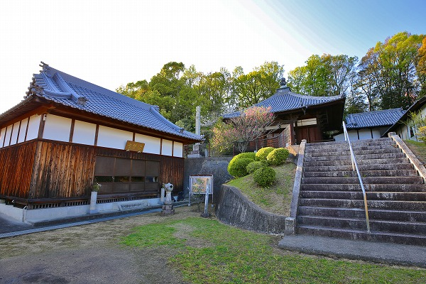
お寺の名は
吉祥寺。
訪れるのは20数年ぶりだ.
人間というのは不思議なもので、20年超えると余程インパクトがあること以外は
ほぼ忘れているものなんですね。
ここのお寺のこともほぼ忘れかけていて、凄い寝釈迦さんがいる事だけは記憶していたのだが、どんな寝釈迦でどんなところだったか、という事をほぼ忘れてしまっていましたよ。
涅槃堂は本堂へと登る階段の下にあり、外から見た限りでは…記憶にないっす。
で、涅槃堂の扉を開けてみると…
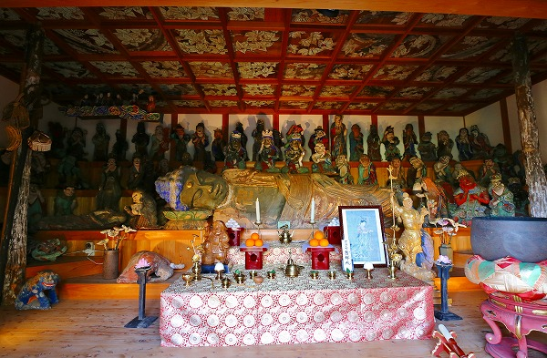
嗚呼！
こんな凄かったっけか！
まるで初めて会ったかのような衝撃的なインパクト。
ご無沙汰しております、寝釈迦サマ。改めて感動させていただいておりますよ。
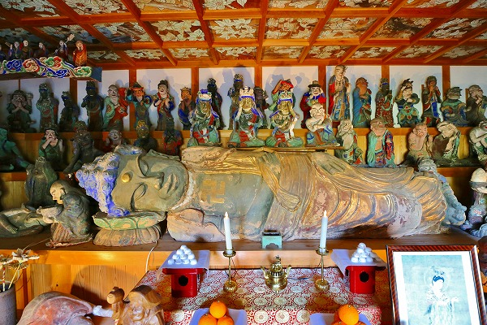
2.5ｍの涅槃像。
そのサイズ以上に強烈なインパクトを放っている。
多分頭部が異様に大きいからだと思う。
そしてその表情！
豪快にングォーーッといびきをかいて寝ているようでもある。まあ、本当は亡くなるシーンなんですけどね。
この涅槃像、造られたのは弘化年間（1844～1848）。
村内の各家から神仏護符を集め、その灰と土を混ぜて造ったという。
ここで思い出されるのが同じようなサイズで
同じような造型クオリティの
静岡県河津の涅槃像。
時期的にはここの涅槃像よりも早くに作られているが何となく似たテイストを感じてしまう。
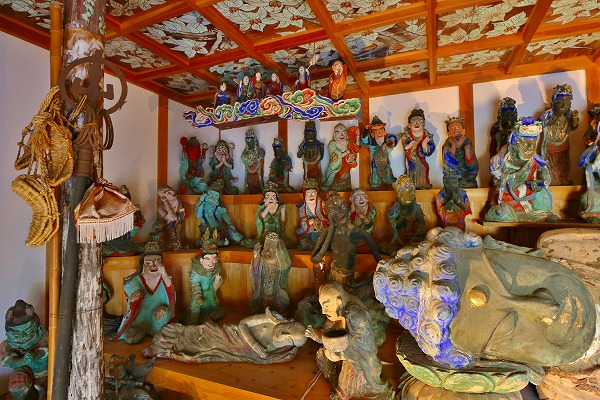
巨大涅槃像もだが、その周りを取り囲む人々にも着目していただきたい。
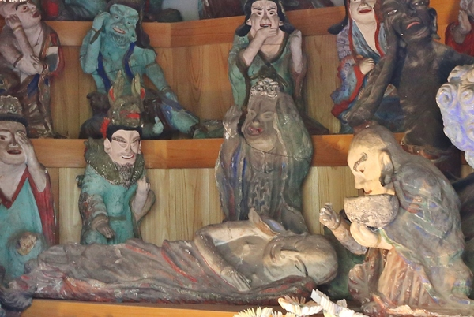
皆、釈迦の入滅を悲しんで泣いている…はずなのだが自身も
寝釈迦よろしく寝ちゃってる人がいたりする。
…いや、本当は阿難尊者という釈迦十大弟子の一人で、お釈迦様の入滅にショックを受けて倒れているシーンなのだが、昼寝しているようにしか見えない。
このようなユーモラスな造型が所々に見られるのだ。
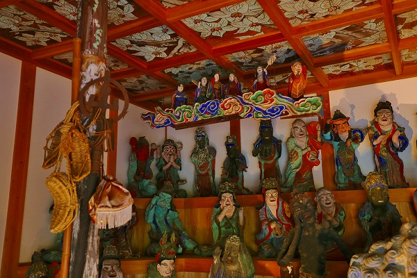
寝釈迦の頭上には雲に乗った方々が。
これは釈迦を助けに来た摩耶夫人であるとされている。
柱には草鞋や錫杖などが架けられている。
さらに草鞋の隣にある袋は摩耶夫人が投げた薬が木の枝に引っかかってしまって釈迦に届かなかったというエピソードを表しているものだろう。
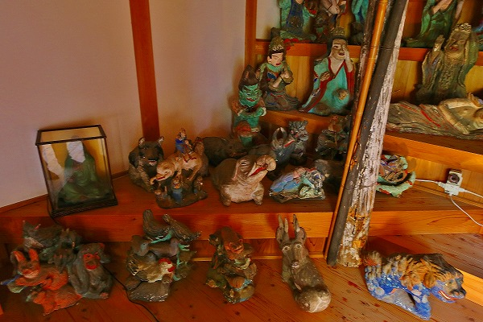
端の方には動物も。
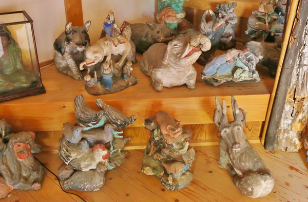
チョット見難いんで増感＆拡大してみますね。
象や猿、その他得体の知れない謎の動物までもがお釈迦様の死を悲しんでいるようですよ。
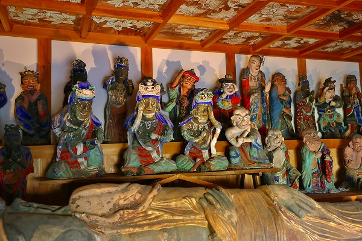
涅槃像の真後ろ辺りはかなりホットスポットのようで、釈迦弟子の皆さんが嘆き悲しんでおられる。
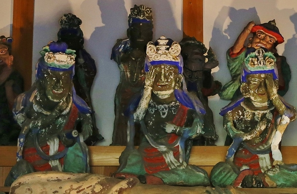
もう、ゴン泣きですよ。
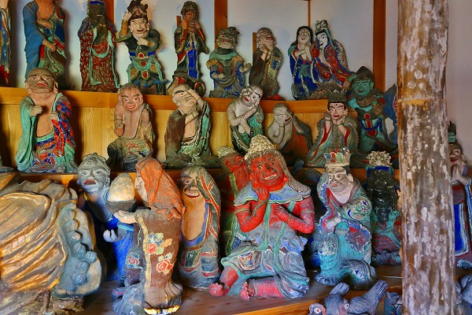
一方、端っこの方になると悲しみのグラデーションもやや薄くなってくる。
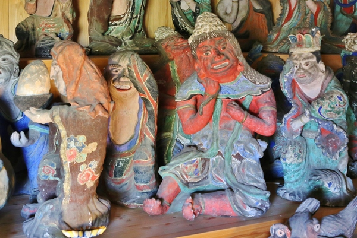
最早悲しいんだか楽しいんだかよく判らない表情だ。
その中に大盛りの飯を運んでいる人がいた。
これは純陀といい、お釈迦様に最後の食事を提供した信者といわれている。
もっともその料理が原因でお釈迦様は亡くなってしまうのだが…。
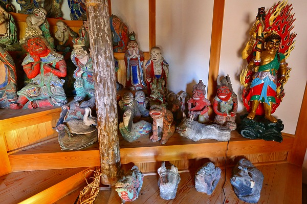
更に端にはこれまた仏教に縁遠そうな方々が。
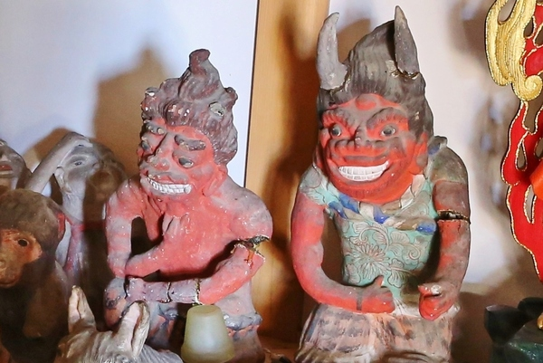
執金剛神と蜜迹金剛神。
オマエら、絶対笑ってるだろ…。
全体的に民芸品の土人形みたいだが、その作風に反して意外と史実に忠実に造られているのがビックリだった。
釈迦入滅という歴史的な事件がモチーフの割に全体的に
ゆるーい雰囲気が印象的だったな。
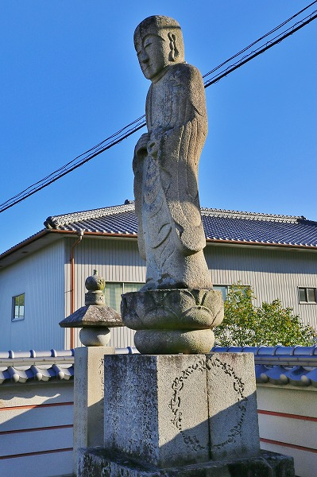
門前には綺麗なお地蔵さんが立っていた。
台座に刻まれた文字は上から読んでも下から読んでも同じ音になる回文になっているそうな。